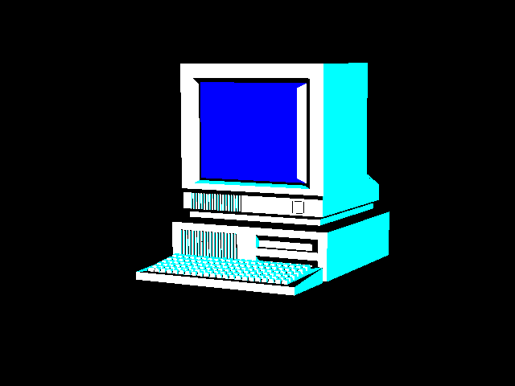

KeyloggerA keylogger is any software or hardware component
that can intercept and record all manipulations with a computer keyboard.
Often, a keylogger is located between the keyboard and the operating system
and intercepts all user actions. This tool either stores the intercepted information
on the infected computer,
or, if it is part of a larger attack, all data is immediately transmitted to the remote
computer of the attackers.
|
|---|
Varietes of KeyLoggersAlthough there is a wide variety of keylogger options,
the main division is made into software and hardware.
The most commonly used software keylogger is part of
a malicious program such as a Trojan or rootkit.
As a rule, this is also an easier option for gaining access
to the system of interest without physical intervention.
|
|---|
Infection methodSoftware keyloggers are often installed as part of complex malware. Target computers can be infected during hidden boot when visiting an infected site. Often, keyloggers can be implemented in various ways and, under various pretexts, are embedded in completely legal software. Hardware keyloggers are installed by an attacker who has physical access to the computer of interest. |
|---|
|  |
Detection and removalIt is not easy to detect malicious keyloggers,
as they do not always behave like many other malicious programs.
They do not seek out valuable information and do not send it to a
remote server, they do not try to destroy data on an infected machine.
Keyloggers do their job quietly and discreetly.
Antivirus programs can scan, detect, and eliminate all variants of
keyloggers known to them. However, keyloggers designed to target
a specific user are not easy to identify, since most often they are
not registered as known malicious software. Nevertheless, sooner or later,
they are discovered as soon as they begin to manifest
themselves by unauthorized sending data to a remote server.
|
|---|
Malware-Keylogger |
Alika Tsulygina |
|
|---|